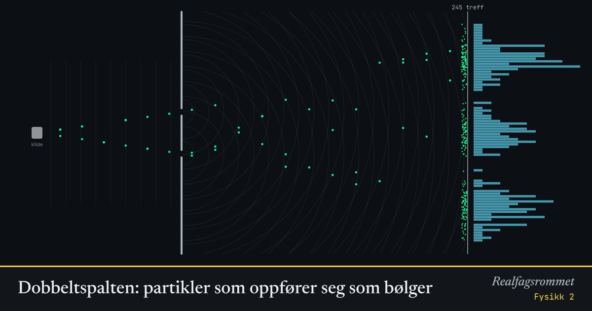

Dobbeltspalten: partikler som oppfører seg som bølger
Partiklene sendes én og én. Hver treffer skjermen i et enkelt punkt, men etter hvert dukker det opp et stripemønster. Hver partikkel oppfører seg som en bølge som går gjennom begge spaltene.
Start animasjonen
Formler
Om animasjonen
Ett og ett treff ser tilfeldig ut. Det er umulig å forutsi hvor neste partikkel lander, bare sannsynligheten. Mønsteret vokser fram av mange treff.
Med to spalter blir det interferens: noen steder forsterker bølgene hverandre, andre steder slukker de hverandre ut.
Når vi måler hvilken spalte partikkelen går gjennom, forsvinner stripene. Målingen ødelegger interferensen. Dette skiller kvanteobjekter fra klassiske objekter.
Det samme skjer med fotoner, elektroner og til og med hele molekyler.
Prøv dette
- Hva skjer med avstanden mellom stripene når bølgelengden øker? Og når spalteavstanden øker?
- Sammenlign «én spalte» med «måler hvilken spalte». Hvorfor blir mønsteret slik?
- Elektroner har mye kortere bølgelengde enn synlig lys. Hva betyr det for stripene?
- Forklar med egne ord hvorfor en partikkel ikke kan ha en bestemt bane i dette forsøket.
Kompetansemål
- Fysikk 2: Kvanteobjekter og klassiske objekter